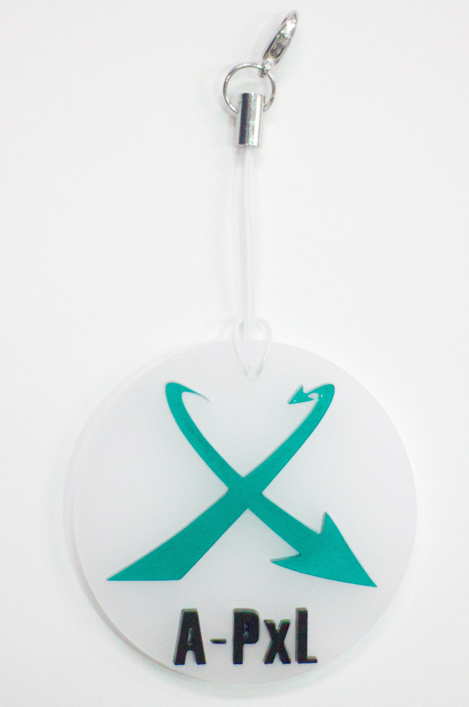
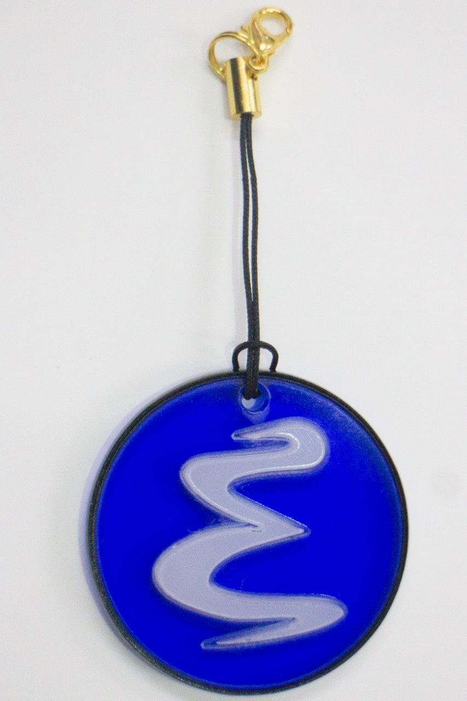
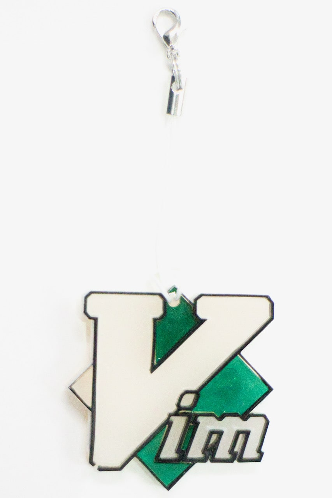
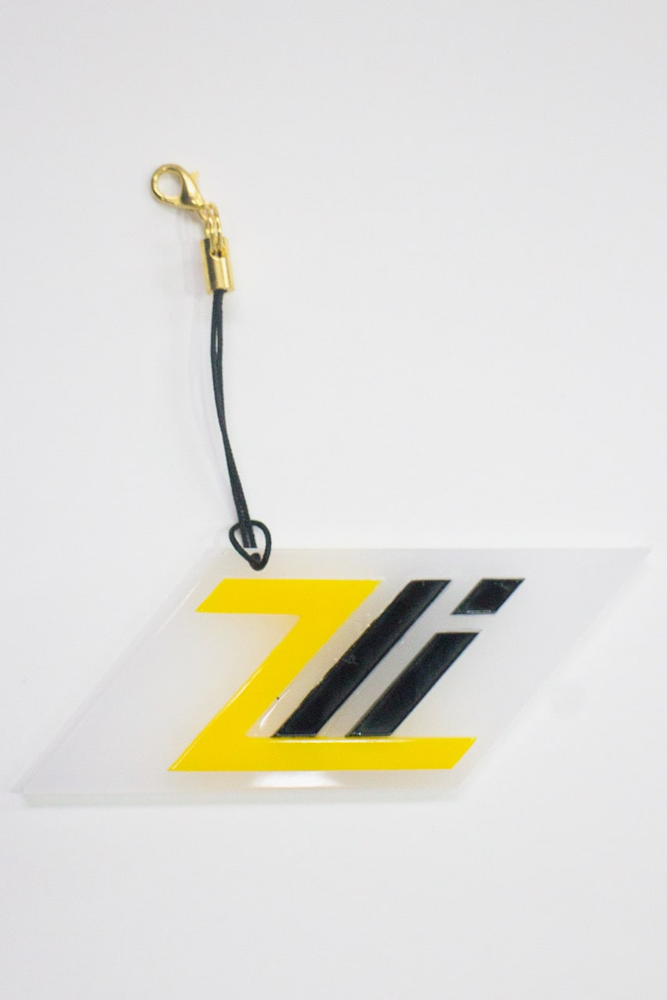
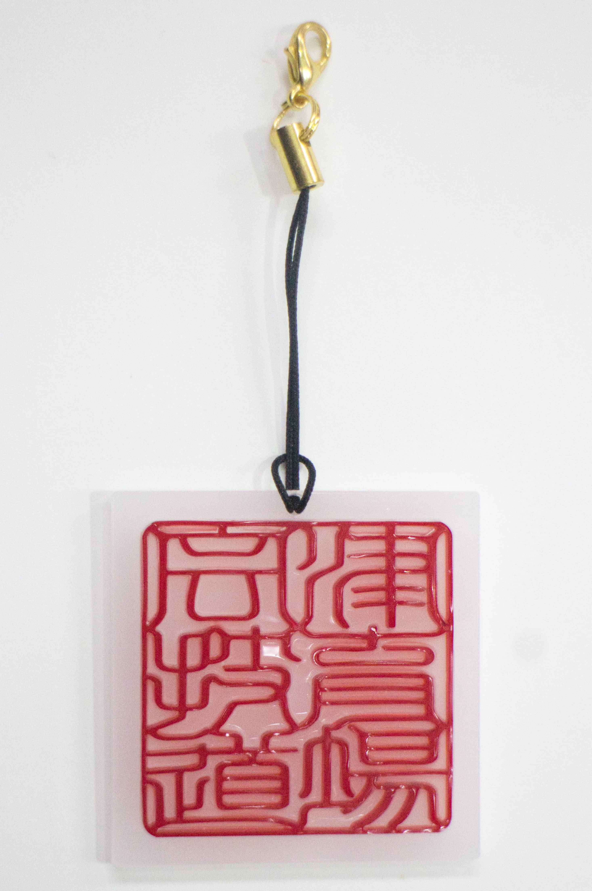
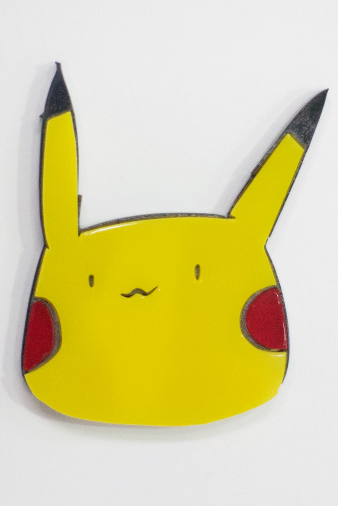
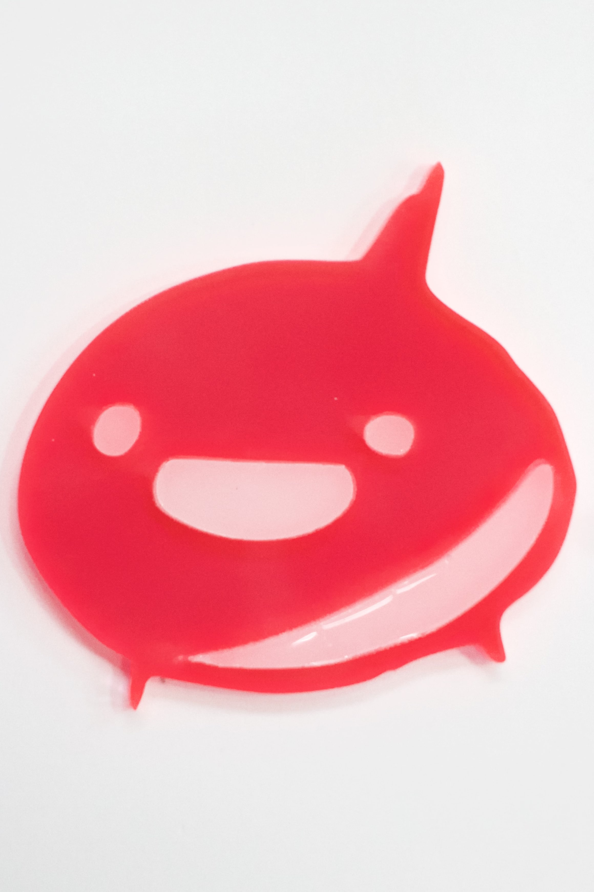
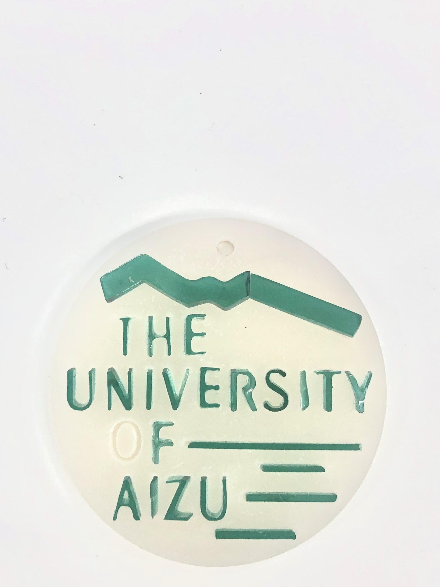

Geek dojoには２台のレーザーカッターがあります。
詳しい利用方法
カットできる素材はMDFという木に近い素材や、アクリル板などです。
このイベントでは、SA/TAと共にオリジナルキーホルダー作りを体験できます。
サークルのロゴ、自分で考えたデザイン、好きなキャラクターのイラストなど何でも制作できます。
オリジナルキーホルダーをGeek Dojoで作ってみませんか？
レーザーカッターで
キーホルダーを作ろう
@Aizu Geek Dojo







